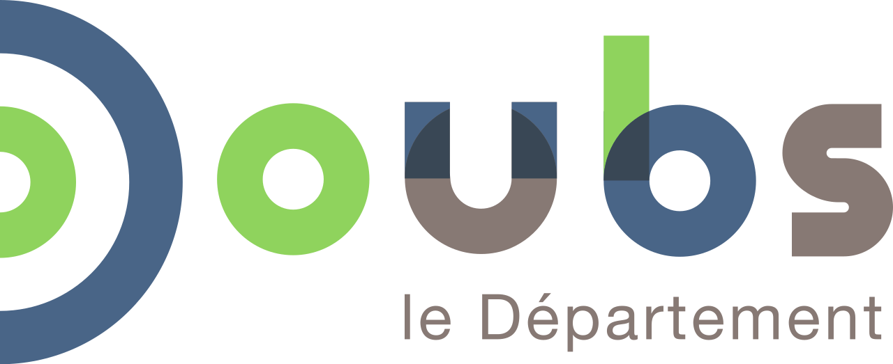
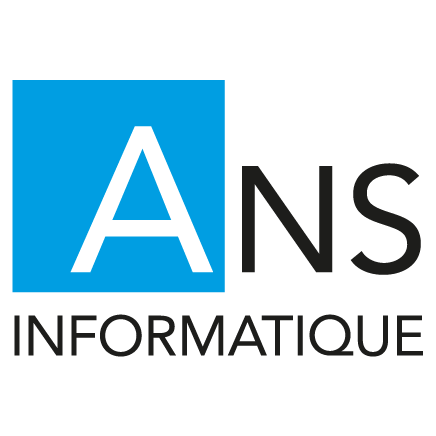

Portfolio De Yanis
Accueil
Mes Certifications
ANSII
CNIL
Curriculum vitale
Mon Cv
Mes experiences, Mes Projets
Mes stages
Veilles Informatiques
Durant mes années de Lycée, j'ai effectué différents stages
en Informatique et Réseau
:
Pour Télecharger mes Rapports de Stages, cliquez sur les logos !!

